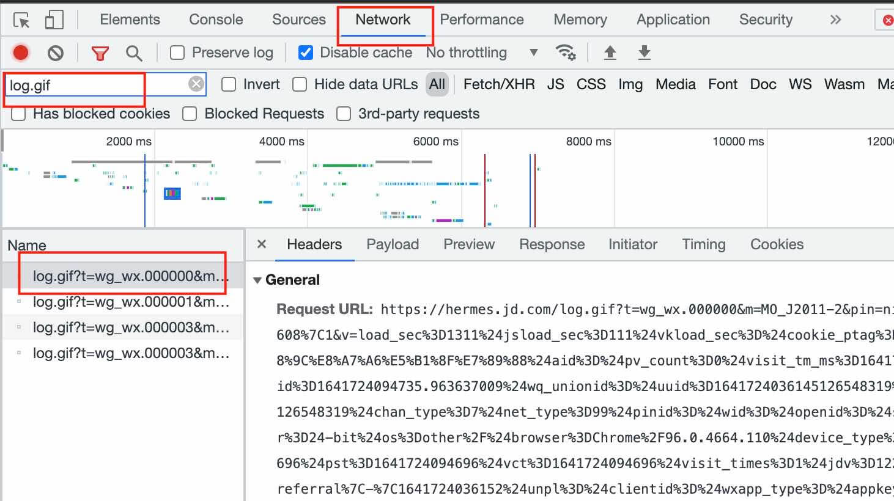
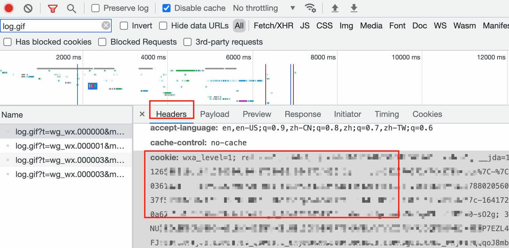

获取 JD cookie 方法
在运行自动化脚本的时候需要获取到对应网站的登录 cookie，这里介绍通过 chrome 浏览器获取到需要的信息。
这里提供的方法仅供用于前端开发测试。
首先登陆移动端网站：https://m.jd.com
右键点击 inspect 进入开发者界面，然后点击网页右上角的登录键根据提示需要输入账户信息登录。
登录成功后在开发栏切换到 network 选项，并且在 filter 中输入 log.gif 过滤出需要的信息：

选中第一个 log 文件，点击 header 栏，在其中找到 cookie 项：

复制其中的内容到剪贴板。
找到开发页面下方的 console 栏，我们通过简单的 js 脚本提取出上面 cookie 的有效内容：
var c = '这里粘贴复制好的 cookie';
var value = c.match(/pt_pin=.+?;/) + c.match(/pt_key=.+?;/);
copy(value);执行完成后此时我们的剪贴板里就已经复制好了 cookie 信息。
手机端可以通过解包 app 来提取 cookie，具体可以参考我的 js 脚本：https://github.com/nie11kun/config-rules/blob/master/Shadowrocket/get_jdcookie.js
标签：无